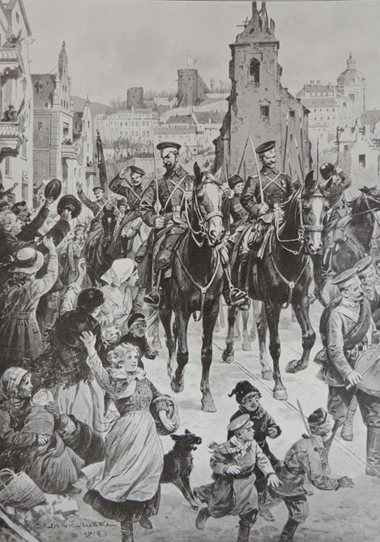

Le samedi 1er juillet 1916, à 7h30 de ce 701ème jour de guerre, le temps est au beau. Des coups de sifflet ordonnent à 120.000 soldats britanniques et du Commonwealth, des volontaires essentiellement, de sortir de leurs tranchées pour avancer en direction des lignes allemandes ; débute une gigantesque offensive anglo-française sur la Somme, la plus insensée et la plus sanglante de toutes les batailles de la Grande Guerre de 1914-1918. Son souvenir demeure très vif chez les Britanniques, dont toute une génération de jeunes soldats a été fauchée sur la Somme.
Du lundi 3 juillet au dimanche 9 juillet 1916
Sur les fronts belge et français
Cette semaine, la centième de la guerre, a été favorable aux armées de l'Entente, sur tous les fronts. Sur le front belge, l'activité de l'artillerie s'est manifestée plus spécialement dans le secteur à l'est de Ramscappelle et dans la région de Steenstraete.
Sur le front anglais, en liaison avec les troupes françaises, les positions allemandes de la région de la Somme ont été attaquées avec le plus vif succès pour les troupes britanniques. C'est surtout en face de Lens et en face de Bapaume, occupées par les ennemis, que l'effort a été le plus rude et le résultat le plus complet : le bombardement a été d'une violence inouïe, les obus tombaient avec méthode sur les tranchées allemandes, brisant les réseaux de fil de fer, nivelant parapets et défenses. Près d'Angres et de Montauban, les Anglais ont été particulièrement heureux. Leur avance continue.
Les troupes françaises, au nord et au sud de la Somme, restant soudées aux troupes britanniques, ont avancé progressivement jusqu'à quelques kilomètres de Péronne: le chiffre des prisonniers faits par nous dépasse 9000 parmi l'important matériel capturé on a pu compter 76 canons et plusieurs centaines de mitrailleuses.
En Champagne, l'activité s'est rallumée tout à coup : toutes les attaques allemandes ont été arrêtées par nos tirs de barrage, ou repoussées à la grenade. Passant à l'offensive, les troupes françaises ont nettoyé les tranchées de première ligne et, en certains points, pénétré jusqu'à la dernière ligne.
Autour de Verdun, les troupes ont résisté avec une vaillance indomptable à tous les assauts ; la lutte d'artillerie a continuée à être très violente toute la semaine, à l'est de la Meuse et dans la région de la cote 304. Sur la rive droite, la batterie de Damloup prise par les Allemands est reprise par les Français; l'ouvrage de Thiaumont, a contrario, est repris par l'ennemi. Sur la rive gauche, les Français repoussent les attaques du bois d'Avocourt et de la cote 304 et réussissent un coup de main au Mort-Homme.
Sur les fronts russes
Le général Alexeï KouropatkineLa diversion essayée par le maréchal von Hindenburg, sur le front nord de Riga à Dvinsk, a été inutile : les préparations d'artillerie et les attaques d'infanterie allemandes ont été arrêtées par nos Alliés. Au sud-est de Riga, les premiers succès allemands ont été enrayés par les renforts du général russe Kouropatkine qui a rejeté l'ennemi dans ses positions, en lui faisant subir de lourdes pertes.
Au nord du Pripet, dans la région de Baranovitchi occupée par les Russes, et au sud du Pripet, vers Kolki, l'aile droite du général russe Broussiloff reprend sa marche en avant. Sur la route de Loutsk à Vladimir-Volinski, les Austro-Allemands continuent leur mouvement de retraite sous la pression des Cosaques et de l'infanterie russe qui ont franchi le Stokhod sur les talons des fuyards : la poussée russe vers Kovel et Vladimir continue.
Dans la Galicie du sud, les Russes se sont emparés de l'important nœud de voies ferrées de Delatyn. Tandis qu’en Asie-Mineure, ils ont eu à subir des offensives de la part des troupes turques dans la région de Trébizonde et aussi en Mésopotamie ? Néanmoins les Russes les ont repoussées en faisant subir de grosses pertes à l'assaillant.
Du lundi 10 juillet au dimanche 16 juillet 1916
Sur les fronts belge et français
La bataille continue sur tout le front où le duel d'artillerie reste très violent. Les batteries belges de tous calibres ont exécuté des tirs de destruction systématiques sur les organisations défensives de l'ennemi principalement dans la région de Dixmude : l'ennemi a vigoureusement riposté.
Les communiqués anglais enregistrent les brillants succès dont on voyait la préparation se développer méthodiquement depuis quelques jours : tandis qu'un âpre débat, localisé dans le bois des Trônes, qui se trouve exactement au sommet de l'angle droit dessiné par le front d'attaque de la Somme, retenait l'attention de l'ennemi, un intense bombardement préludait à un assaut général de la seconde ligne allemande; cette seconde ligne est enfoncée sur une longueur de 6 kilomètres et une profondeur de 3 kilomètres. Çà et là, la troisième ligne est entamée. Nos Alliés se trouvent ainsi à une lieue et demie de Bapaume.
Dans le secteur français, au nord et au sud de la Somme, la lutte continue et la canonnade s'intensifie : les Français sommes tout près des faubourgs de Péronne, à 1500 mètres de cette ville.
En Champagne, dans la région de Prosnes, les troupes françaises ont effectué, avec un succès identique, des raids comme ceux qui ont si bien réussi aux troupes britanniques.
L'offensive allemande contre le fort de Souville, qui se trouve à 5 kilomètres de Verdun, se poursuit avec 2000 canons de tous calibres : les attaques ont pour but d'encercler le fort. Après un bombardement d'une intensité sans cesse accrue, l'infanterie allemande, évaluée à une division et demie, soit six régiments ou 15 à 18000 hommes, sur un front de 2 kilomètres à peine, a surgi et a pu s'approcher à 800 mètres du fort.
Sur le front russe
 Entrée des Russes à LoutskSur la Dwina, de Riga à Dwinsk, les actions et réactions se balancent : la marine allemande désireuse de montrer qu'elle n'est pas ébranlée par les pertes subies dans la bataille du Jutland, du 31 mai, prépare l'offensive; au sud de la Dwina, vers le lac Narotsch, les luttes sont assez vives, avec léger avantage des troupes de von Hindenburg.
Entre le Niémen et le Pripet, autour des deux Baranovitchi, combats acharnés et prolongés des deux armées en présence, celle de Léopold de Bavière et celle du général Evert.
Au sud des marais du Pripet, l'armée russe de Kalédine, aile droite du général Broussilov, fait des progrès continus : déborde le Stockhoud que, déjà, elle a passé à Ongly, en face de Sokoul, dans la région où la rivière se rapprochant jusqu'à 6 ou 7 kilomètres du Styr, forme une sorte d'isthme.
Mais les Allemands, commandés par le maréchal Hindenburg, accumulent les défenses et les canons afin de rendre imprenable Kovel : une grande bataille est engagée là et se prolonge.
En Galicie, le mouvement de retraite du général autrichien Bothmer continue. Au-delà du Dniester, l'ennemi se retranche dans de fortes positions pour couvrir la voie ferrée de Stanislau.
Dans le Caucase, à l'ouest d'Erzeroum, les Russes ont repris d'assaut la ville de Mamahatoum : au cours de leur retraite, les Turcs ont mis le feu à la ville. Les Alliés russes ont également enlevé d'assaut la ville de Bayburt, important point stratégique sur le théâtre de guerre avancé d'Arménie.
Du lundi 17 juillet au dimanche 30 juillet 1916
Sur les fronts belge et français
Le conflit est revenu à la guerre de tranchées, dure et âpre. Les Britanniques, dans leur secteur de Picardie, malgré des pluies abondantes qui empêchent les grandes opérations, poussent leurs incursions sur un front de 3 kilomètres au sud d'Armentières et continuent une lutte difficile devant chaque bois et chaque ferme, se heurtant à des forces importantes et tenaces. Le butin qu'ils ont récapitulé est considérable : 189 officiers (dont plusieurs officiers supérieurs) et 12 000 soldats faits prisonniers, 113 pièces d'artillerie, une quantité énorme de munitions et du matériel de toutes sortes, sans compter ce qui a été détruit; ce qui n'est pas moins intéressant, ce sont les documents trouvés à la Boisselle.
Ces rapports révèlent des pertes effroyables : une compagnie était réduite à 12 hommes, un bataillon ne comprenait plus que 24 hommes.
Sur le front d'attaque de cette même région de Picardie, il n'y a qu'une série de chicanes : l’avance alliée est d'un kilomètre de profondeur sur 5 de front. Au nord de la Somme, de gains en gains, la ligne française est portée le long du chemin de fer à voie étroite de Combles à Cléry ; au sud, l’offensive alliée persiste sur plus de deux lieues. Les forces alliées auront pris à l'ennemi 3 000 hommes, 30 officiers, des canons et des mitrailleuses.
Sur les autres parties du front, dans l’Aisne, la Champagne et l'Argonne, aucun fait important : rencontres de patrouilles, tentatives allemandes contre quelques tranchées, menus faits divers de la guerre ; partout l'avantage est resté aux Alliés, dont les Russes qui occupent désormais une partie du front de Champagne.
Le front de Verdun, par l'ampleur de la tragédie qui s'y déroule depuis cinq mois, reste l'objet des principales préoccupations des Français : sur la rive gauche de la Meuse, le bombardement continue dans les régions d'Avocourt et de Chattancourt ; sur la rive droite, les troupes françaises progressent à l'ouest de l'ouvrage de Thiaumont et enlèvent un ouvrage fortifié au sud de Fleury.
Sur les fronts russes
L'offensive russe s'est étendue sur l'ensemble du front de 1 300 verstes ; elle ne sévit pas uniformément sur une envergure aussi vaste : de grands secteurs d'accalmie s'intercalent entre les foyers de l'offensive générale. L'emploi de la cavalerie aggrave les échecs ennemis.
Les Allemands, en Courlande, après avoir reculé le long de la rive sud du golfe de Riga, à l'ouest, et presque jusqu'à l'Eckau, au sud, se maintiennent devant l'armée de Kouropatkine : cette altitude défensive est fort éloignée de la menace de Pétrograd lancée il y a quelques mois.
Mais une grande activité des bâtiments légers et des sous-marins allemands, à l'ouest des golfes de Finlande, de Riga el de Bothnie même, est signalée ; la flotte russe ne reste pas inactive non plus. Un petit combat dans la Baltique orientale montre que les opérations maritimes ne sont pas abandonnées.
Entre le Niémen et le Pripet, les ennemis luttent avec énergie pour conserver le grand nœud de chemins de fer de Baranovitchi.
En Galicie, Brody a été pris par les troupes russes sans grande préparation d'artillerie, grâce à l'élan de leur infanterie : l'état-major d'une armée autrichienne se trouvait à Brody, point de jonction important, 82 kilomètres séparent Brody de Lemberg (Lwoff), mais cette distance présente un terrain très accidenté, organisé et miné: une lutte acharnée et sanglante semble vouloir se profiler.
Plus au sud, les Russes continuent à progresser à travers les Carpates qu'ils ont abordées sur différents points. Leur cavalerie a franchi déjà les passages de Kimpolung et trois colonnes d'infanterie pénètrent dans la Hongrie.
Sur le front du Caucase, la situation des troupes russes est des plus satisfaisantes. Pour assurer leurs communications entre Erzeroum et Trébizonde, les Russes se sont emparés de Baïcourt, puis d’Erzindjian et des dépôts de fusils, revolvers, armes blanches, munitions, pétrole et benzine qui s'y trouvaient. La voie est donc libre entre les deux bases essentielles des Russes dans cette région.
Du lundi 31 juillet au dimanche 13 août 1916
Sur les fronts belge et français
Il semble que, pendant cette quinzaine, une certaine accalmie se soit produite sur le front français, sauf du côté de Verdun ; mais l'ensemble de la pression alliée n'a faibli nulle part : du côté d'Ypres, une attaque allemande a été repoussée ; un corps allemand, nouvellement arrivé, a tenté de sortir de ses tranchées, il a été arrêté net par les tirs français.
En Picardie, les Britanniques, traversent une période d'attente : ils se renforcent sur leurs nouvelles positions ne se livrant qu'à de petites opérations, mais, leur grosse artillerie ne reste pas inactive à Pozières et Thiepval (villages situés entre Albert qui nous appartient et Bapaume que tiennent les Allemands) et son action intensive prépare une nouvelle attaque.
Dans le secteur français, l’infanterie qui, dans le but d'organiser, les positions conquises, avait légèrement ralentit son activité et dont les opérations avaient été mauvais temps et le brouillard, est rentrée en action de la façon la plus brillante : elle s'est emparée de Maurepas et s'est avancée jusqu'au nord de Gléry, approchant ainsi de Péronne (aux mains des Allemands) par le nord.
L’ouvrage de ThiaumontUne recrudescence d'action s’est produite autour de Verdun, et ce sont les troupes françaises qui ont gardé l'offensive ; après la reprise de Vaux-le Chapitre, le Chenois, les troupes, ont eu à subir de violentes contre-attaques contre les positions nouvellement reconquises, contre-attaques arrêtées par des tirs de barrage. Dans le secteur de Fleury, les Français continuent leur progression, reprenant le village et la redoute de Thiaumont.
Au seuil de la troisième année de guerre, le Président de la République a adressé aux armées une lettre, dans laquelle il a glorifié la bravoure de nos soldats et de leurs chefs et mis en lumière la supériorité actuelle des Alliés; le généralissime Joffre a lancé un ordre du jour se terminant par ces mots: « la Victoire est certaine ! »
Sur le front russe
Le maréchal de Hindenburg a été nommé chef suprême de toutes les armées allemandes et autrichiennes du front russe : il a multiplié en vain ses tentatives contre les armées de Kouropatkine, surtout dans la région de Riga.
C'est par un cri de triomphe que les communiqués russes ont annoncé la chute de toute la ligne de la Strypa après sept semaines d’efforts combinés des armées, placées sous le commandement du général russe Broussilov : Stanislau et toute la ligne austro-allemande en avant de Tarnopol a croulé. D'autre part, les armées russes qui, ont franchi le Sereth pressent la retraite générale des ennemis. Ce mouvement a conduit nos Alliés jusqu'aux environs de Jezierna (importante station sur la voie ferrée de Tarnopol à Lemberg) et à Narvona dont ils se sont emparée (sur le chemin de fer d'Elliatyn-Stanialau). La victoire russe est donc complète du Pripet au Dniester.
Du lundi 14 août au dimanche 27 août 1916
Sur les fronts belge et français
Les Tanks engagés dans la bataille de la SommePour ne point avoir l'élan et la violence des premiers jours de juillet l’offensive franco-anglaise, sur la Somme, n'en continue pas moins sont action : elle est mesurée mais permanente, et chaque jour marque pour les Français et leurs alliés une avance. Au nord comme au sud du fleuve, la ligne s'égalise : les troupes françaises ont enlevé le gros village de Maurepas, au nord de la Somme, avançant le front de 200 mètres sur une longueur de 2 kilomètres; pendant ce temps, les Anglais s'emparaient de la route de Flers.
Ces deux mouvements sont une menace et rapprochent les Alliés des points d'où ils auront vue sur l’ensemble de la région étendue jusqu'à Bapaume, aux deux côtés de la route venant de Péronne.
Pour la première fois depuis longtemps, l'ennemi a engagé en Champagne, près, de Tahure, une action d'assez large envergure : l'attaque a été refoulée.
Deux diversions, également enrayées, ont été tentées par les Allemands en forêt d'Apremont et au sud de Saint-Mihiel.
La tenace offensive que les Français mènent depuis quelques jours sur le front de Verdun, et en particulier sur la rive droite de la Meuse, leur vaut des résultats très appréciables : tout le village de Fleury est rentré en leur pouvoir et, malgré de violentes contre-attaques, ils gagnent du terrain à l'est de Fleury et menacent à nouveau Thiaumont.
Sur les fronts russes
La caractéristique de la phase actuelle des opérations en Russie est la réaction du bloc austro-allemand contre les progrès de son adversaire. Au front nord, accalmie complète : le général Russky qui commandait les armées russes, lors de la première prise de Lemberg et repoussa sur le Niémen la première offensive allemande est nommé commandant en chef des armées russes du front nord ; le général Kouropatkine, que les critiques militaires qualifient de « temporisateur », est nommé gouverneur général du Turkestan ou l'état de siège est proclamé.
En Galicie et en Bukovine, le groupe des années russes de Broussilov marque un temps d'arrêt : Kadeline devant Kowel ; Sakharoff sur la Strypa et le Haut-Sereth, rencontrent de grandes difficultés. Hindenbourg a dirigé sur ces points des soutiens empruntés à la région du Niémen et des troupes turques venues en hâte sur les flancs des Carpates. Les Russes ne cessent de harceler l'adversaire pour lui ôter sa liberté de manœuvre.
De part et d'autre, il y a en ce moment, un regroupement des troupes en présence.
En Arménie, sous la pression de l'ennemi, supérieur en nombre, les Russes doivent reculer pour attendre renforts et munitions; grâce à la voie Trébizonde-Baïbourt-Erzeroum, ils ont pu se ravitailler, et dans la direction de Mossoul, s'emparer de deux régiments turcs.

Partager cette page